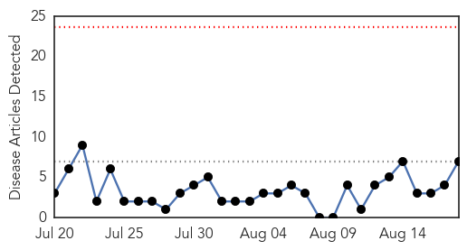
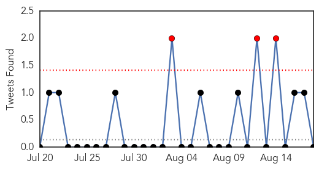
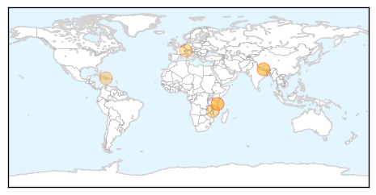
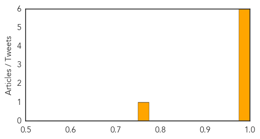
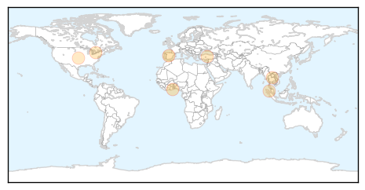

Cholera
30-Day Web Trend
0 alerts, 0 warnings

30-Day Twitter Trend
3 alerts, 0 warnings

Article Locations
Article Confidences
Top Articles:
- 1.000
- Cholera remains uncontrolled in capital
- 0.994
- Progress Being Made to Protect Children and At-Risk Populations Against Cholera in South Sudan
- 0.994
- Cholera kills 4 in Tanzania - Xinhua
- 0.993
- Cholera kills 4 in Tanzania
- 0.990
- People in Cameroon to be protected against cholera with Gavi-supported vaccine - Cameroon
- 0.980
- U.N. should take responsibility for Haiti’s deadly cholera epidemic
- 0.770
- Cholera epidemic under control in Kathmandu: Health Minister Adhikari
Top Tweets:
- 0.700
- RT: Great video (in 5 languages) about the cholera outbreak in Haiti & failure of to take responsibility: http://t.co/…
- 0.667
- .@UN asked about call for UN to take responsibility for its Haiti cholera epidemic, ducks question. http://t.co/86RIevkKKJ
- 0.610
- RT: .@MartinOMalley, taking a strong stand for the UN to take responsibility for Haiti's cholera epidemic: http://t.co/Fn2mo8X…
- 0.515
- RT: The U.N. should take responsibility for Haiti's deadly cholera epidemic. Read my op-ed: http://t.co/M41hQc1g71
Influenza
30-Day Web Trend
0 alerts, 0 warnings

30-Day Twitter Trend
1 alerts, 0 warnings

Article Locations
Article Confidences

Top Articles:
- 0.878
- Mass grave of 1918 Spanish flu pandemic victims uncovered in Pennsylvania -- Secret History -- Sott.net
- 0.810
- Poultry farmers ready to meet demand; Even for Christmas period
- 0.751
- August 18, 2015 Archives
- 0.751
- August 17, 2015 Archives
- 0.739
- Keeping our Priorities Straight
- 0.726
- One-year-old Toronto boy suffering from rare bacterial disease has part of both legs amputated
- 0.671
- No child play, vaccinations for everyone even adults
Top Tweets:
-
No tweets found for Aug 18, 2015